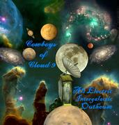

Cowboys of Cloud 9
Computer-generated music, shared freely

This is where I share my interest in computer-generated music with friends, and the occasional
stranger who wanders in from somewhere else on the web. I've always been drawn to the math
underneath music — Fourier transforms, harmonic overtones, the way a waveform breaks down
into simple sine components — and to what that structure does to the brain: why a minor
third feels wistful, why a steady pulse can lower your heart rate, why some chord progressions
make you tear up for no clear reason. The Cowboys of Cloud 9 are my way of playing with those
ideas directly. They aren't a band in any human sense — no members, no rehearsals, no
green room. They exist only as the flow of energy through silicon, and they've settled,
somewhat to my surprise, into a genre of futuristic, synthetic cowboys playing alt country out
past the edge of the solar system.
Follow the trail below — it runs from the frontiers of Mars all the way back home to the
shoreline.
 Chapter One
Chapter One